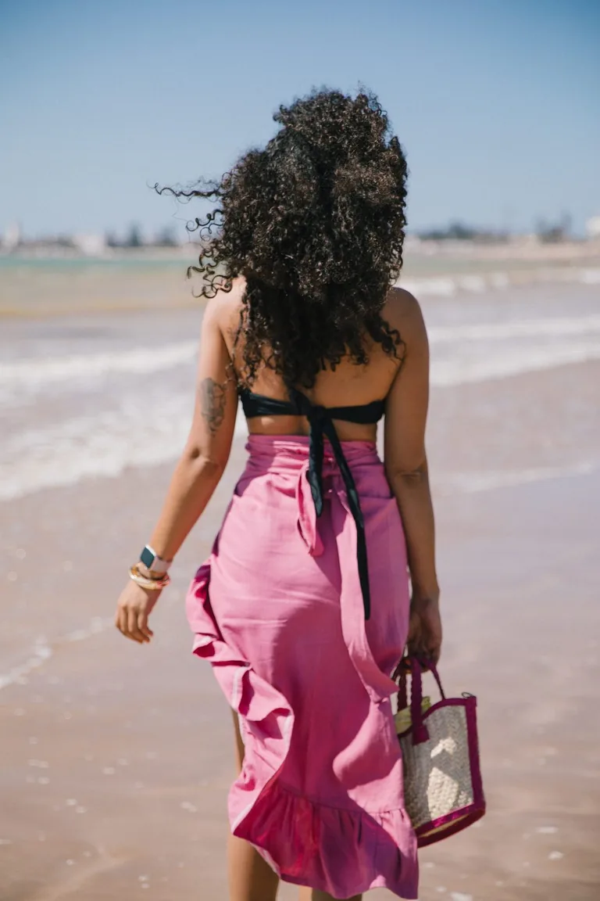
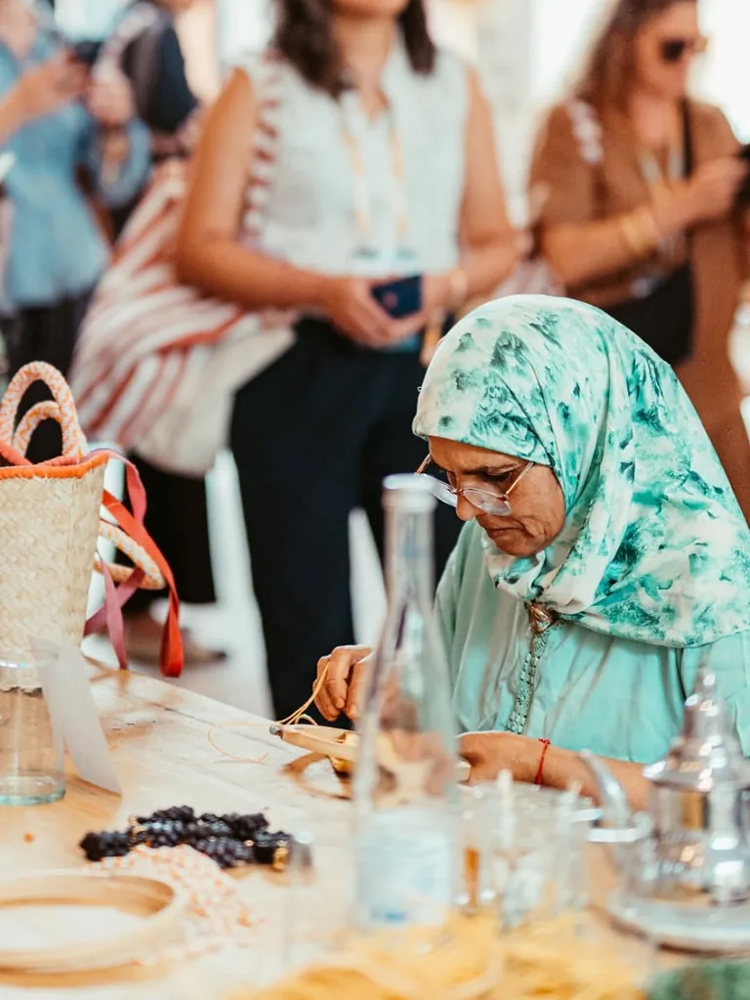
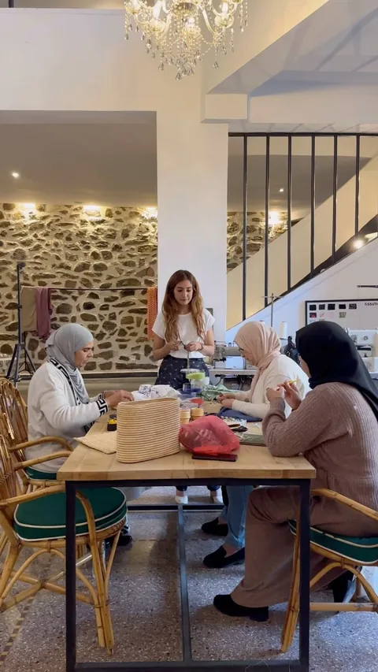

Maison artisanale · GuélizArtisan house · GuélizCasa artesanal · GuélizZanaat evi · Guélizدار حرفية · كليز
Le vestiaire moderne de MarrakechThe modern wardrobe of MarrakechEl vestuario moderno de MarrakechMarakeş’in modern gardırobuخزانة مراكش العصرية
Des pièces façonnées à la main à Guéliz, pensées pour voyager.Pieces shaped by hand in Guéliz, made to travel.Piezas hechas a mano en Guéliz, pensadas para viajar.Guéliz’de elde şekillenen, yolculuk için tasarlanan parçalar.قطع تُصاغ يدوياً في كليز، صُممت لترافقك في السفر.

L’objet signatureThe signature objectEl objeto emblemáticoİmza parçaالقطعة المميزة
La Sculpture
Raphia et feuille de bananier. Une âme de fil de fer courbée à la main, puis gainée de couleur à l’atelier.Raffia and banana leaf. A wire core bent by hand, then wrapped in colour at the atelier.Rafia y hoja de banano. Un alma de alambre curvada a mano y revestida de color en el atelier.Rafya ve muz yaprağı. Elle bükülen tel iskelet, atölyede renkle sarılır.رافيا وأوراق الموز. هيكل سلكي يُثنى باليد ثم يُغلف بالألوان داخل المشغل.
Découvrir les sacsDiscover the bagsDescubrir los bolsosÇantaları keşfetاكتشفي الحقائب66 rue Yougoslavie66 rue Yougoslavie66 rue Yougoslavie66 rue Yougoslavie66 شارع يوغوسلافيا
Plus de mains,
moins de machines.More hands,
fewer machines.Más manos,
menos máquinas.Daha çok el,
daha az makine.أيادٍ أكثر،
وآلات أقل.
Chaque pièce naît ici, du fil brut à la finition, une à une. Le nom de l’artisane accompagne la pièce quand il est renseigné.Every piece begins here, from raw thread to finishing, one at a time. The maker’s name follows the piece whenever it is recorded.Cada pieza nace aquí, del hilo bruto al acabado, una a una. El nombre de la artesana acompaña la pieza cuando está registrado.Her parça burada, ham iplikten son dokunuşa kadar tek tek doğar. Kaydı olduğunda ustasının adı parçaya eşlik eder.كل قطعة تولد هنا، من الخيط الخام إلى اللمسة الأخيرة، واحدة تلو الأخرى. ويرافق اسم الحرفية القطعة متى كان موثقاً.
Entrer dans l’atelierStep into the atelierEntrar en el atelierAtölyeye girادخلي إلى المشغل

- Atelier 100 % féminin100% women-run atelierAtelier 100 % femenino%100 kadın atölyesiمشغل نسائي بالكامل
- Guéliz · Marrakech
- Raphia · doum · feuille de bananierRaffia · doum · banana leafRafia · doum · hoja de bananoRafya · doum · muz yaprağıرافيا · دوم · أوراق الموز
- Réparations à vieLifetime repairsReparaciones de por vidaÖmür boyu onarımإصلاحات مدى الحياة
L’édition du momentThe current editLa edición del momentoGüncel seçkiاختيارات الموسم
Des objets à vivre, pas à garder sous verre.Objects to live with, not keep behind glass.Objetos para vivir, no para guardar tras un cristal.Cam arkasında değil, hayatın içinde yaşanacak parçalar.قطع للحياة، لا للحفظ خلف الزجاج.
Voir toute la collectionView the full collectionVer toda la colecciónTüm koleksiyonu görشاهدي المجموعة كاملةYZA Girls
Elles portent YZA.
YZA porte leurs histoires.They wear YZA.
YZA carries their stories.Ellas llevan YZA.
YZA lleva sus historias.Onlar YZA’yı taşır.
YZA onların hikâyelerini taşır.هن يرتدين YZA.
وYZA تحمل حكاياتهن.
De Marrakech à Paris, les pièces quittent l’atelier et commencent une autre vie.From Marrakech to Paris, the pieces leave the atelier and begin another life.De Marrakech a París, las piezas dejan el atelier y empiezan otra vida.Marakeş’ten Paris’e parçalar atölyeden çıkar ve başka bir hayata başlar.من مراكش إلى باريس، تغادر القطع المشغل لتبدأ حياة أخرى.
Rencontrer les YZA GirlsMeet the YZA GirlsConocer a las YZA GirlsYZA Girls ile tanışتعرّفي إلى فتيات YZAPortées, aimées, réparées.Worn, loved, repaired.Llevadas, queridas, reparadas.Taşınan, sevilen, onarılan.تُرتدى، تُحب، وتُصلح.
Avant de choisirBefore choosingAntes de elegirSeçmeden önceقبل الاختيار